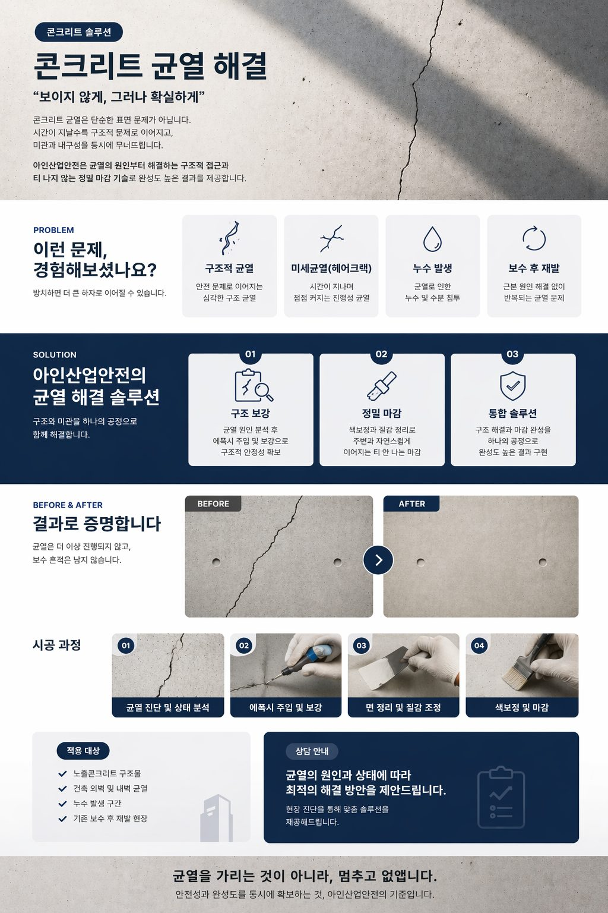
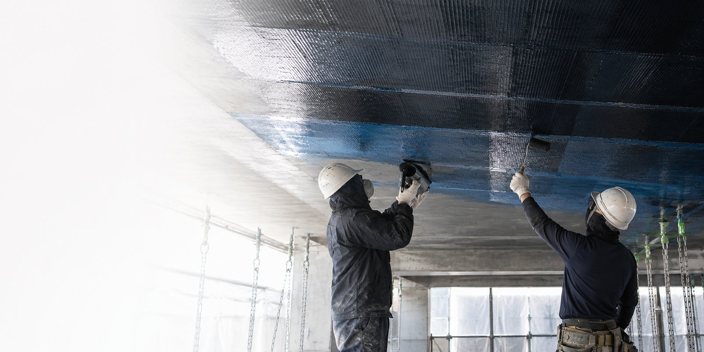
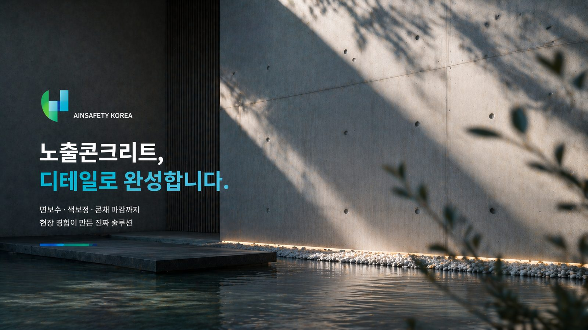
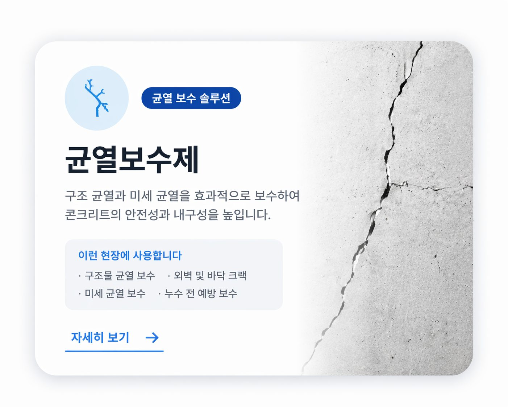

01
균열보수 · 에폭시 주입
CRACK REPAIR & EPOXY INJECTION
균열게이지로 거동 여부를 먼저 확인합니다. 비거동 균열은 균열의 폭·깊이·수분 상태·구조적 영향과 보수 목적을 확인한 뒤 주입, 충전 등 적합한 공법을 선정합니다. 거동 균열은 변형 추종성이 있는 실링·충전 시스템을 검토합니다. 에폭시 주입은 균열 내부를 채워 구조적으로 다시 붙이는 것이 목적입니다.

STRUCTURAL REPAIR & REINFORCEMENT
덮는 보수와 구조를 되살리는 보수는 다릅니다. 제주도 현장에서 균열과 박락의 진행을 먼저 진단합니다.
콘크리트 보수보강은 “겉이 메워졌는가”가 아니라 “안쪽의 손상이 멈췄는가”로 평가됩니다.
균열은 폭이 아니라 진행 여부가 먼저입니다. 철근이 노출되거나 콘크리트가 박락된 부위는 방치할수록 해풍과 염분이 철근에 닿는 경로가 넓어집니다. 제주노출콘크리트는 손상의 원인을 먼저 진단한 뒤, 균열보수·단면복구·철근 보수를 원인에 맞는 순서로 진행합니다.
FREQUENT QUESTIONS
WORK PROCESS
손상의 원인과 진행 여부에 따라 공법과 순서가 달라집니다. 정해진 세트가 아니라 진단 결과에 따른 조합입니다.

01
CRACK REPAIR & EPOXY INJECTION
균열게이지로 거동 여부를 먼저 확인합니다. 비거동 균열은 균열의 폭·깊이·수분 상태·구조적 영향과 보수 목적을 확인한 뒤 주입, 충전 등 적합한 공법을 선정합니다. 거동 균열은 변형 추종성이 있는 실링·충전 시스템을 검토합니다. 에폭시 주입은 균열 내부를 채워 구조적으로 다시 붙이는 것이 목적입니다.

02
SECTION REPAIR
박락되거나 들뜬 콘크리트는 건전한 면이 나올 때까지 완전히 제거한 뒤 단면복구재로 채웁니다. 한 번에 두껍게 채우지 않고 여러 층으로 나눠 다지며, 각 층이 안정된 뒤 다음 층을 올립니다.

03
REBAR EXPOSURE REPAIR
노출된 철근의 부식 정도를 먼저 확인합니다. 녹을 제거하고 방청 처리한 뒤 단면을 복구합니다. 녹을 그대로 덮으면 내부에서 팽창이 계속돼 다시 박락되므로, 방청 처리를 건너뛰지 않습니다.

04
OPTIONAL — CASE BY CASE
균열보수와 단면복구만으로 구조 성능 회복이 부족하다고 판단되는 경우, 탄소섬유 시트 보강 같은 추가 공법을 현장 진단 후 별도로 검토합니다. 모든 현장에 기본으로 포함하는 공정은 아닙니다.
CHECK POINT
CASE 01
폭이 서서히 벌어지거나 균열을 따라 백태·박락이 함께 나타나는 현장.
CASE 02
피복이 떨어져 나가 철근이 드러나고 녹이 진행되는 현장.
CASE 03
모서리·바닥판 등이 깨지거나 떨어져 나가 단면 자체가 줄어든 현장.
CASE 04
사용 연수가 오래돼 여러 부위의 손상 정도와 보강 필요 여부를 함께 진단해야 하는 현장.
TECHNICAL NOTES
균열 거동 여부 판단과 보수 순서의 기준을 정리했습니다.